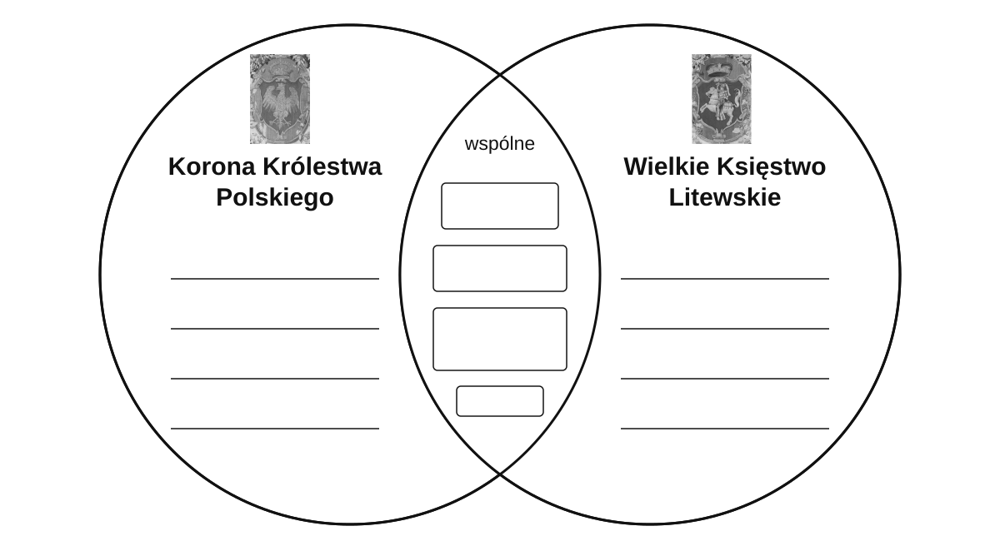

Rzeczpospolita Obojga Narodów
Unia realna zawarta w ................................................ dnia ................................................
Przeczytaj fragment na s. 67. Wpisz wspólne elementy w środek, a odrębne po obu stronach.

Diagram jest Twoją notatką. Na końcu porównasz go z modelem.
Herby: wierne kadry z arrasu z Cererą,1560, domena publiczna (ZPE Rf9iPk0dCMVVV). Diagram objaśniający, nie źródło z XVI wieku.